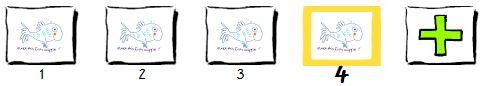

Do It! Animation-ish: Quadrilateral Story
 The Challenge
The Challenge
Your challenge is to use Wiggledoodle-ish and FlipBook-ish to tell a story by animating quadrilaterals such as squares, rhombuses, and rectangles. You will also draw other quadrilaterals, such as trapezoids and parallelograms. Project Steps
-
Start Wiggledoodle-ing!
-
Start FlipBook-ing!
-
Shape Story
Start Wiggledoodle-ing!
- Start the Animation-ish software.If you don't have the program installed on your computer, go to the web version and use your username and class code provided by your facilitator to sign into Animation-ish.
- Go to: FableVision Learning to watch the lessons.
- Watch Lesson 1 to learn how to make a doodle.
- Go back to the Animation-ish application and select Wiggledoodle-ish. The workspace will open.
- Try out what you learned from the Lesson 1 video.
Did you make your picture move?
Learning to draw similar pictures is just part of learning to animate. Next, you will add frames.
A frame is a single drawing. Several frames in a row create a series or sequence. Drawing lots of frames allows you to tell a longer story.
With FlipBook-ish, you can add many frames to tell a long story or explain an idea.

Start FlipBook-ing!
- Start the Animation-ish software. If you don't have the program installed on your computer, go to the web version and use your username and class code provided by your facilitator to sign into Animation-ish.
- Go to: FableVision Learning to watch the lessons.
- Watch Lesson 2 to learn how to make frames in FlipBook-ish.
- Go back to the Animation-ish application and select FlipBook-ish, and the workspace will open.
- Try out what you learned from the Lesson 2 video.
Click Here for Wiggle and Flip Ideas
Ideas:
- Draw someone riding a bike or skateboard.
- Show a person walking.
- Demonstrate a math problem.
- Show a plant growing.
- Draw a smiling face.
- Animate part of a sport like bouncing a basketball or swinging a bat.
- Draw the sunset or the moonrise.
Shape Story
Now that you have practiced with Flipbook-ish and Wiggledoodle-ish, it is time to create a story about shapes. You will animate your shapes using the program.
- Open Animation-ish.
- To decide which program you would like to use, think about if you want to trace your drawing over again for each new frame or if you would like to be able to make a copy of the frame instead.
- Based on your decision above, open a Wiggledoodle-ish or Flipbook-ish from the Project Vault.
- Create an animated story using shapes as characters within the frames.
- Your shape story must include 4 or more quadrilaterals in total including:
- 1 of each or more of the following shapes--rhombuses, rectangles, and squares.
- 1 or more quadrilaterals not listed above, such as a parallelogram or trapezoid.
- Decide on a way to easily identify the different shapes so that you can create a key in your journal. Will each type of shape be a different size or color?
- Make your shape story creative. For example, add different funny faces (emojis) to the shapes, include other colors or objects in the background, and more.
- Save your animation when finished with your name.